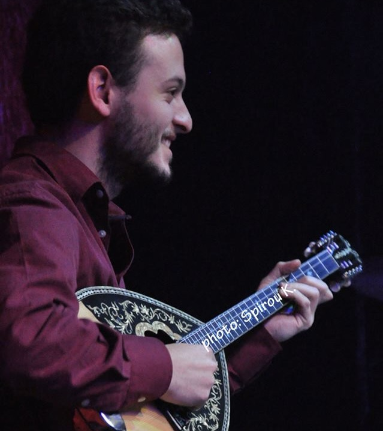

San aeraki
tha hatho
Some productions begin with a brief. This one began with a friendship.

My collaboration and friendship with bouzouki player Tasos Govas grew through music and our shared love of Greek song.
Tasos had a dream: to have some of his songs professionally produced, arranged and recorded.
After his passing, I decided to make that dream a reality.
The project became a way to preserve something that mattered to him—not simply by recording the songs, but by giving them the production, arrangement and care they deserved.
I developed the arrangements, worked on the production and brought the songs into a professional recording environment, aiming to respect their character while giving them a complete, contemporary sound.
What began as a musical collaboration became something much more personal.
A promise to a friend, fulfilled through music.
- Production
- Arrangement
- Recording
Greek Laïko
Tasos Govas
Listen to the project
Listen to the complete production on YouTube.
Watch on YouTube